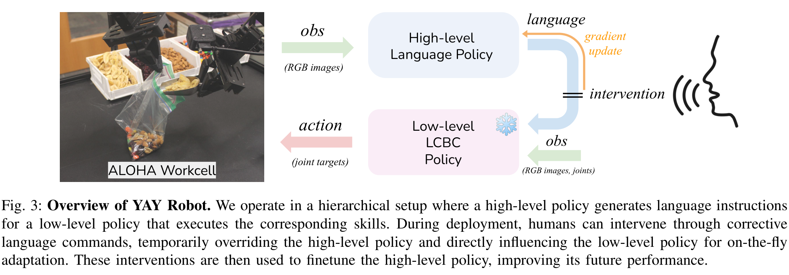

From a correction to learning
Choose a stage to see what changes in YAY Robot. Use Tab to reach the controls and arrow keys to switch stages.

The policy selects an instruction
The high-level policy observes the scene and selects an instruction, such as insert the object into the bag. The low-level controller uses that instruction, camera images, and joint information to produce motor actions.
If the insertion fails, repeating the intended task step may be insufficient. The robot may need an adjustment before it can continue.
Instruction source: high-level policy No weight updatesA human temporarily changes the instruction
The person interrupts and gives a correction, such as move a little to the left. This overrides the high-level instruction; the same low-level controller executes the corrective skill.
The system records the observation history and human instruction as a correction example. The immediate behavior change comes from the new instruction, before any fine-tuning occurs.
Instruction source: human Both policies' weights unchangedSaved corrections train the high-level policy
After collecting interactions, the system fine-tunes the high-level policy on the original dataset together with saved corrections. These examples teach the instruction selector which existing skills to choose in the situations that required help.
The low-level controller stays frozen. In future attempts, the updated high-level policy can select corrective instructions without a human having to repeat them; the controller's physical skill repertoire remains fixed.
High-level policy: updated Low-level controller: frozenIllustrative walkthrough, not a robot simulation. Commands are explanatory examples rather than model predictions. The diagram explains the learning mechanism; it does not establish recovery on unseen failures.